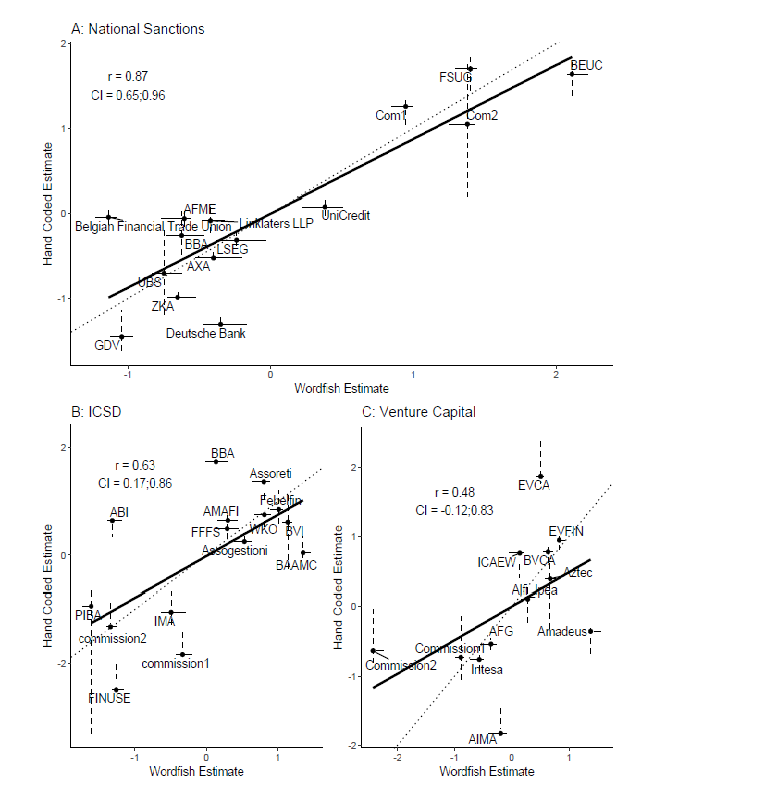

My research interests revolve around four main themes. The common denominator is an interest in whether and why decision-makers respond to pressures from different groups in society: 1) Political connections and corporate political influence, 2) revolving door politics, 3) responsiveness to the mass public and 4) measurement.
Below, I detail my research within each topic.
Political Connections and Corporate Influence on Public Policy
Most people expect that the political activities of companies matter, but existing evidence has only sparringly supported this belief. My research on this topic revolves around two agendas: 1) Firms may not care about the content of legislation if they can change the way it is enforced – and they can use political connections to this end. 2) I draw on a wide range of new data sources to capture various ways in which firms can influence policy outcomes, and match this to firm-level finances.

The Revolving Door and Taxes – Political Connections Decrease Corporate Tax Rates
Awarded the Stigler Dissertation Award by the Stigler Center at the University of Chicago’s Booth School of Business.
I argue that hiring former legislators leads to regulatory forbearance, and firms use this to pursue economic rents. I test the argument with data on firm-level taxes and the IRS’s enforcement activities. I compile a database of publicly listed firms, which have hired Members of Congress (MCs) in the period 2004-2015. I show that hiring a former MC decreases the average company’s tax rate. The effect is strongest, when firms hire the best connected former MCs, who served in committees responsible for oversight of the IRS. To investigate whether the effect is driven by selective enforcement, I collect data on IRS audits and find that hiring a former MC is associated with a lower probability of being audited. Additional tests do not suggest that the findings are driven by general rule changes or lobbying activities. This indicates that rules are enforced differently against politically connected firms.

Lobbyists as Government Employees – Evidence from the Bureaucracy
With Josh McCrain, Emory University
A growing body of research examines the transition of government employees into the private sector, commonly known as the revolving door. A common conclusion in this work is that government employees cash in on their experience and, most importantly, their connections to current officials. We focus on two under-studied aspects of the revolving door: 1) the transition of lobbyists back into government and 2) the value of connections between lobbyists and government agencies. Exploiting the unexpected victory of Donald Trump in the 2016 presidential election and the staggered timing of appointments into his administration, we find that firms whose lobbyists went back through the revolving door saw 20-70% increase in revenue, and the increase was larger in Democrat-leaning firms. Our results shed light onto the political economy of the lobbying industry and suggest a need to further study the interaction between lobbying firms and the federal bureaucracy.

Asset specificity, corporate protection, and trade policy (Under Review)
With Mogens K Justesen, Copenhagen Business School
We provide the first firm-level evidence that policy-makers tailor trade policy to suit selected firms. We argue that firms with relatively higher levels of specific assets find it more costly to reorganize production, and are hurt more by international competition. In response, policy-makers grant more trade protection to firms with fixed assets. Since protectionism is costly, firms compete for it, which creates diffusion dynamics where protection granted to one firm affects protection granted to others. To test this claim, we utilize the special role antidumping duties (ADDs) play in international trade, and combine petitions for ADDs with financial data on the firms filing them in a unique dataset. Using spatial autoregressive models, we find that firms with specific assets are granted more protection. However, diffusion dynamics differ within and between groups of firms producing the same good. This suggests that firms can partly shape their own level of trade protection.

Does Money Matter When Firms Lobby? Firm-level Evidence from Consultations at the EU Commission (Under Review)
With Anders Woller, University of Copenhagen
This study presents the first firm-level quantitative evidence that companies with high operating performance are more likely to persuade the EU Commission to adhere to their preferences. We do this by collecting data on individual companies active across 45 consultation procedures from 2005-2013 on issues related to the internal market in the EU, totaling more than 300 companies. We propose three distinct mechanisms accounting for the association: companies with high operating performance are 1) able to conduct investments in the economy, upon which decision-makers rely 2) likely to be knowledgeable about their respective sector – information which decision-makers demand 3) capable of mounting opposition if decision-makers are unresponsive to their needs. Our results support the first proposed mechanism: politicians are more responsive to companies with high operating performance as it allow companies to invest in employment opportunities. Finally, we show that high salience of an issue, following times of crisis, significantly limits the influence of big business.
Revolving Door Politics
It routinely attracts both attention and condemnation, when elected officals leave office to take jobs in the private sector. Despite this, we know very little about, whether the so-called revolving door between business and politics changes policy outcomes. In my dissertation, I investigate how the potential for lucrative post-elective employment shapes the behavior of US Members of Congress.

The Lure of the Private Sector – Career Prospects Affect Selection out of the Senate (Under Review)
While it is often conjectured that private sector salaries lure politicians out of public service, no quantitative evidence exists on this proposition. I argue that legislators gauge their private sector career prospects by observing how successful their former colleagues are in lobbying jobs. I document that when career prospects improve, so does the probability that senators become lobbyists. An array of tests suggests that the effect arises, because senators react to opportunity costs associated with being in office: There is no effect immediately before a senator’s pension scheme improves, nor among those who retire from working life after Congress or are elected to a safe seat. Senators, who have sponsored the least bills and are absent for floor votes, are affected the most. These results show that the electorate competes with private sector actors for the labor of politicians. This sheds light on the motivations of elected officials, and the dynamics of political selection.

Voting for a Career – The Revolving Door Moderates the Senate
I investigate how the revolving door affects legislative behavior in the Senate. The literature on final-term problems suggests that senators should begin shirking their responsibilities before leaving office, because they no longer are accountable to voters. Lack of electoral accountability could, however, have different effects depending on the senator’s career ambitions. I show that senators, who voluntarily leave office for private sector employment, become more moderate in their voting during their final Congress. Those who are voted out, or leave the labor market entirely, are unaffected or become more extreme. Additionally, I show that a) revolving door senators vote in closer alignment with the pool of post-elective employers, b) future employers experience larger stock market returns in the days immediately after revolving door senators introduce new bills, and c) final-term revolvers exert more legislative effort. This suggests that revolving door senators change behavior to signal that they are employable.
Political Responsiveness

Can Citizens Set City Policy? Evidence From A Decentralized Welfare State
(Invited to revise and resubmit at the Urban Affairs Review)
With Martin Larsen, Aarhus University.
Municipal governments supposedly empower citizens, giving them the ability to shape the political organization of their local community. In spite of this, we know little about whether municipal governments are in fact responsive to the policy views of municipal electorates. In this study, we look at whether the policy implemented by local politicians actually responds to changes in the public mood. To do this, we compile a unique and comprehensive dataset of local fiscal policy, which we use to construct municipal-level estimates of fiscal policy conservatism. This detailed policy data is then linked to an indicator of local ideological sentiment. We find strong evidence for dynamic responsiveness: when preferences in a municipality changes public policy responds.
Political Methodology and Measurement

Scaling Political Positions from Text – Assumptions, Methods and Pitfalls
With Robert Klemmensen, University of Southern Denmark
Invited chapter for: Luigi Curini & Robert Franzese (Eds.): SAGE Handbook of Research Methods in Political Science & International Relations (Forthcoming).
In this chapter we review the different automated techniques for scaling text most commonly used in political science. We start by relating text scaling to the broader field of measurement models aimed at estimating latent positions. Through this comparison, we outline the assumptions underlying the scaling of political text. We proceed to show how the most commonly used scaling techniques build statistical models of text through these assumptions. In doing so, we also show the utility of the various techniques as well as their vulnerable spots. We then focus on two assumptions that are common across all techniques: that the texts are sufficiently a) long and b) similar in the way meaning is ascribed to words. Through simulations, we investigate how sensitive various techniques are to violations of these assumptions. We conclude by discussing how the need for awareness about model assumptions illustrates how automated scaling should not replace human judgement. We also discuss how a) techniques for estimating word and text embeddedness may improve our scaling techniques by incorporating context, and b) the need for conceptualizing measurement error arising from wrong models.